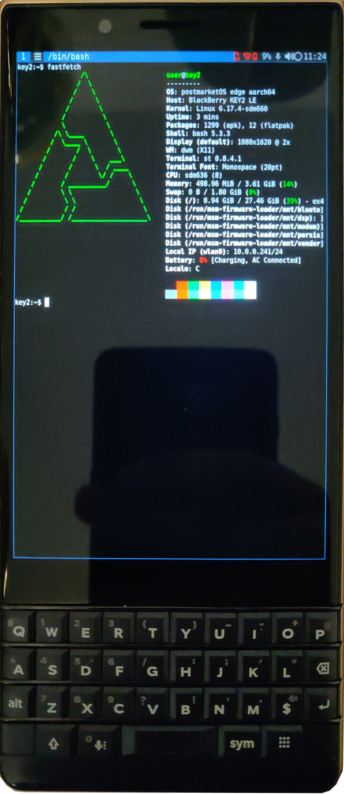

BlackBerry KEY2 Generic (blackberry-key2-generic)
| This device has been tested with postmarketOS, but its device package has not yet been added to the postmarketOS repositories. This means that it cannot be selected in pmbootstrap. Status: bootloader is very locked down, but once you get over that hurdle most things work. But the gpu crashes a lot due to a bug in the sdm660-mainline kernel. |
|
 KEY2 LE running sxmo | |
| Manufacturer | BlackBerry |
|---|---|
| Name | KEY2 Generic |
| Codename | blackberry-key2-generic |
| Released | 2018 |
| Type | generic |
| Hardware | |
| Chipset |
Qualcomm Snapdragon 660 (SDM660) Qualcomm Snapdragon 636 (SDM636) |
| CPU |
Octa-core (4x1.8 GHz Kryo 260 Gold 4x1.6 GHz Kryo 260 Silver) |
| GPU | Adreno 509 / Adreno 512 |
| Display | 1620x1080@60Hz 4.5" IPS LCD |
| Storage | 32/64GB |
| Memory | 6GB / 4GB |
| Architecture | aarch64 |
| Software | |
Original software
The software and version the device was shipped with.
|
Android 8.1 Oreo |
Extended version
The most recent supported version from the manufacturer.
|
Android 8.1 Oreo |
| FOSS bootloader | no |
| postmarketOS | |
| Category | testing |
Pre-built images
Whether pre-built images are available from the postmarketOS Installation page.
|
no |
Mainline
Instead of a Linux kernel fork, it is possible to run (Close to) Mainline.
|
yes |
pmOS kernel
The kernel version that runs on the device's port.
|
6.17.4 |
Unixbench score
Unixbench Whetstone/Dhrystone score. See Unixbench.
|
2125.9 |
| Firmware package | firmware-blackberry-key2-generic |
Initial MR
Initial merge request.
|
pmaports!6830 |
{kind=link}
Flashing
Whether it is possible to flash the device with
pmbootstrap flasher. |
Partial
|
|---|---|
USB Networking
After connecting the device with USB to your PC, you can connect to it via telnet (initramfs) or SSH (booted system).
|
Works
|
Internal storage
eMMC, SD cards, UFS...
|
Works
|
SD card
Also includes other external storage cards.
|
Works
|
Battery
Whether charging and battery level reporting work.
|
Partial
|
Screen
Whether the display works; ideally with sleep mode and brightness control.
|
Works
|
Touchscreen |
Works
|
Keyboard
Whether the built-in physical keyboard works.
|
Works
|
| Multimedia | |
3D Acceleration |
Partial
|
Audio
Audio playback, microphone, headset and buttons.
|
Broken
|
Camera |
Broken
|
Camera Flash |
Broken
|
| Connectivity | |
WiFi |
Works
|
Bluetooth |
Works
|
GPS |
Broken
|
NFC
Near Field Communication
|
Broken
|
| Modem | |
Calls |
Broken
|
SMS |
Broken
|
Mobile data |
Broken
|
| Miscellaneous | |
FDE
Full disk encryption and unlocking with unl0kr.
|
Untested
|
USB OTG
USB On-The-Go or USB-C Role switching.
|
Broken
|
HDMI/DP
Video and audio output with HDMI or DisplayPort.
|
Untested
|
| Sensors | |
Accelerometer
Handles automatic screen rotation in many interfaces.
|
Works
|
Ambient Light
Measures the light level; used for automatic screen dimming in many interfaces.
|
Untested
|
Hall Effect
Measures magnetic fields; usually used as a flip cover sensor
|
Untested
|
Haptics |
Broken
|
Power Sensor
Sensor to monitor current, voltage and power. Not fuel gauge!
|
Untested
|
Primary Bootloader
Whether it is possible to replace stock bootloader with U-Boot.
|
Broken
|
|---|---|
Secondary Bootloader
Whether it is possible to chainload U-Boot from stock bootloader.
|
Works
|
Mainline
Whether latest upstream versions of U-Boot are not broken and it is possible to use them.
|
Partial
|
Internal Storage
Whether it is possible to boot from internal storage (e.g. eMMC or UFS).
|
Works
|
SD card
Whether it is possible to boot from SD card.
|
Works
|
USB Host
Whether it is possible to boot from a USB storage or connect a keyboard.
|
Untested
|
USB Peripheral
Whether it is possible to use device as a peripheral in U-Boot, e.g. for fastboot mode.
|
Works
|
Display |
Works
|
Keyboard |
Broken
|
Buttons
Whether it is possible to navigate in boot menu or grub with volume and power buttons.
|
Works
|
This is a Generic Device Port consolidating BlackBerry KEY2 (blackberry-athena) and BlackBerry KEY2 LE (blackberry-luna)
Contributors
Maintainers
Users owning this device
see Key2 Owners and Key2 LE Owners
Status
The port runs with feature support as indicated. GPU crash is pretty consistently hanging the device.
You will want to use a UI not relying on 3D acceleration (sxmo-dwm), also see instructions to disable GPU usage in Post-Installation Setup below.
Also the tethered unlock requires that the device is connected to a PC (or other device that can run the exploit) for booting.
The device should be merged into pmaports soon, until then see the MR in the links section.
Variants
Display Panel
Both Key2 and Key2 LE were manufactured with either of two different display panels.
Currently only the boe ("livata") panel is fully supported with a working driver.
If you have the other panel, synaptics, 3d acceleration (currently broken anyway), brightness control and turning the display off will not work. Neither will the touchscreen (this is probably easiest to fix). A (not yet working) attempt to support that panel is here, a fixed one will eventually come up: https://github.com/sajattack/sdm660-linux/tree/saj/bbry/syna-panels
To find out which one your device has before attempting an installation, you can:
[ FIXME: find out if there is a way to get that info from un-rooted android (probably not)]
boot the android recovery, open the included terminal or connect via adb shell, and run:
# dmesg | grep Panel.Name
the log should have either of:
mdss_dsi_panel_init: Panel Name = Livata video mode dsi panel => this is the panel named boe in the port
mdss_dsi_panel_init: Panel Name = Synaptics video mode dsi panel => this is the panel named synaptics in the port.
(if there is no output at all, the message most likely scrolled out of the log buffer, which happens a few minutes after boot.)
How to enter flash mode
Hold while powering on, easy.
(Once you have flashed custom software, the device will ALWAYS boot into fastboot mode, because it refuses to boot unsigned software, see below.)
Bootloader Unlock
There is no official way to unlock the bootloader on these devices.
The bootloader/device will only accept to flash or boot images signed by the manufacturer.
In December 2024 a tethered exploit was released (download link in links section) that manipulates the bootloader into allowing to flash and boot unsigned software.
Tethered means that everytime you power-up or reboot the device, you will need to connect it to another device (typically a computer) to execute the exploit to run your custom software (i.e. postmarketOS).
(The authors claim and demonstrate to also have an untethered exploit that permanently manipulates the bootloader, but it's unclear if or when this will be publicly released.)
| WARNING: Even more than on other devices, one needs to be extremely careful manipulating the data on the internal flash. Due to the heavily locked down nature of the Blackberry devices, it is easily possible to get the device into a state where it can neither boot nor be re-flashed, with no known way to recover ("bricked", permanently) |
The exploit ships with (and by default installs and runs) a custom android recovery, it is suggested to use that (or u-boot later) to first make a backup of all your data and all system partitions.
Backup
Replace orangefox.img in the exploit with u-boot.img, built from sdm660-mainline, then call the script ./run-twrp.sh to start u-boot. It may take a few tries for the exploit to work.
Hold while it's booting to get a bootloader menu
In the bootloader menu select "USB Mass Storage mode" and you should be able to see the android internal partitions on your PC over USB.
Then make a new folder and run the backup script
Installation
This port is currently in an early stage, not even included in the main postmarketOS repositories yet,
but the code is published, and if you are feeling adventurous, you can build it and install/run it on your device.
Advanced knowledge of Linux and some experience with embedded software development is highly recommended.
(Even when the port is merged into postmarketOS repositories, there will be no pre-built images, so the process will largely remain the same.)
Read and understand the source install instructions: Installation/Using pmbootstrap,
You might even want to try this with another more mature port (on another device!) first, to familiarize yourself with the process.
You will have to install the most recent version of pmbootstrap from git, as a recently added feature is required.
Instead of cloning the main pmaports repository, get the developer's fork and check out the development branch, as referenced in the pending merge request: !6830 Add BlackBerry KEY2 (athena) and KEY2 LE (luna).
(one of the first caveats is that a remote for the main repository has to exist in your git clone, as pmbootstrap expects to fetch some data from there.)
When running pmbootstrap init select vendor blackberry, device key2-generic.
For the user interface you will probably want to select sxmo-dwm, until the GPU crash issue is resolved. but beware that the sxmo UI is rather unusual and has some learning curve of it's own. (there are many user interfaces available, but sxmo-dwm is the only one that is usable on a phone without hardware 3d acceleration.)
Run pmbootstrap install --split to generate separate boot and rootfs images.
The port uses an EFI setup boot via u-boot instead of the more usual android bootimg, the boot image generated by
pmbootstrap is an EFI system partition that can not be booted directly.
You will have to build u-boot for the device separately, as it's neither included in the pmaport nor are binaries currently available. pre-built binaries will be available soon. some more details can be found in pmaports MR !7199, you might want to take some inspiration for building from the APKBUILD file posted there. it also has instructions on how to create the android bootimg containing u-boot.
Once you have all this built, you can install on the device:
| WARNING: Even more than on other devices, one needs to be extremely careful manipulating the data on the internal flash. Due to the heavily locked down nature of the Blackberry devices, it is easily possible to get the device into a state where it can neither boot nor be re-flashed, with no known way to recover ("bricked", permanently) |
if not done previously for backup purposes (recommended!), flash the u-boot bootimg into the recovery partition (by modifying the script provided with the k2fb exploit, adjusting it to flash it instead of the android recovery.)
you can flash the postmarketOS boot and root image to any partition on the internal flash (or an sdcard partition, which is safer),
using cache for the boot image and system for the root image has been tested.
(one may want to flash root to userdatato have more space but complicates updates, or mount the userdata partition at /home later to have space for data.)
(booting via the exploit requires that you run one fastboot flash command everytime, you can either re-flash recovery everytime, like the provided script does, or specifiy an invalid partitition name and a small dummy file.)
You can install the boot/root partitions either with fastboot, or u-boot usb mass storage. Typically u-boot usb mass storage is more reliable.
fastboot
(run the exploit to temporarily unlock the bootloader)
fastboot flash recovery u-boot.img fastboot flash cache blackberry-key2-generic-boot.img fastboot flash userdata blackberry-key2-generic-root.img
u-boot
(you will initially need to use use the exploit and fastboot to flash the u-boot bootimg to the recovery partition and boot it)
- enter the u-boot menu by holding during boot
- select "USB Mass Storage"
- you should now have all the internal partitions of your phone visible on your computer over USB
dd if=blackberry-key2-generic-boot.img of=/dev/disk/by-partlabel/cache oflag=direct bs=8M status=progress dd if=blackberry-key2-generic-root.img of=/dev/disk/by-partlabel/userdata oflag=direct bs=8M status=progress
Post-Installation Setup
some things that are currently broken or not yet automatically set up need to be fixed after installation:
If the device boots but you can't operate it, it should be possible to access it remotely via USB Networking. You can also setup wifi (via the sxmo UI, or after logging in via usb) and then use that for ssh access.
panel driver
If you your device has the synaptics lcd panel, the display will become garbled during boot when the boe driver is loaded, this can be worked around using:
echo blacklist panel_boe_bv045fhm_l00 >>/etc/modprobe.d/blacklist.conf sed -i /panel_boe_bv045fhm_l00/d /usr/share/mkinitfs/modules/00-device-blackberry-key2-generic.modules mkinitfs # update initramfs with new settings
[this does not seem to suffice anymore, with a more recent kernel the screen blacks out unless the gpu driver is also blacklisted, see below.]
gpu
If you have the supported lcd panel, until until the GPU crash is fixed, you will want to disable graphics acceleration completely:
the most practical method is to prevent udev from creating the device nodes, so userspace programs won't be able to use them:
create /etc/udev/rules.d/99-disable-drm.rules and add:
SUBSYSTEM=="drm", RUN+="/usr/bin/rm -f %N"
[FIXME: there should be cleaner ways to achieve this, but this works for now.]
alternatively, blacklist the driver module (this is a bit too broad and may break some other functionality):
# echo blacklist msm >>/etc/modprobe.d/blacklist.conf # sed -i /msm/d /usr/share/mkinitfs/modules/00-device-blackberry-key2-generic.modules
keyboard
If you're using systemd, run this, which should in theory set the correct keymap for x11 and wayland, but in practice may do nothing, depending upon how the desktop environment chooses to respect locale settings
localectl set-x11-keymap us pc key2
If you're using x11, ensure you install device-blackberry-key2-generic-x11, which contains rules to setup xkb
If you're using phosh, you may still have to go into the keyboard settings and select english -> us -> English (US, BlackBerry KEY2)
See also
- pmaports MR
- Kernel MR (merged)
- U-Boot Commit (upcoming autobuild, build/install instructions)
- Tethered bootloader unlock blog
- key2-freeboot recovery toolset (tethered variant) for free and public use windows: by ai10 and contributors
- linux version of tethered bootloader unlock (decompiled to C, decompiled to python)
- Discord development channel
- Stock OS for KEY2 LE ACT575
- Stock OS for KEY2 ACQ160